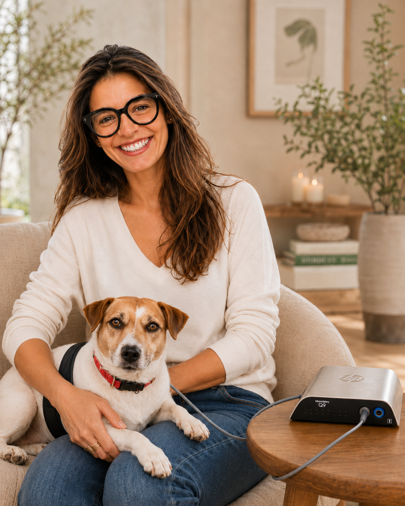
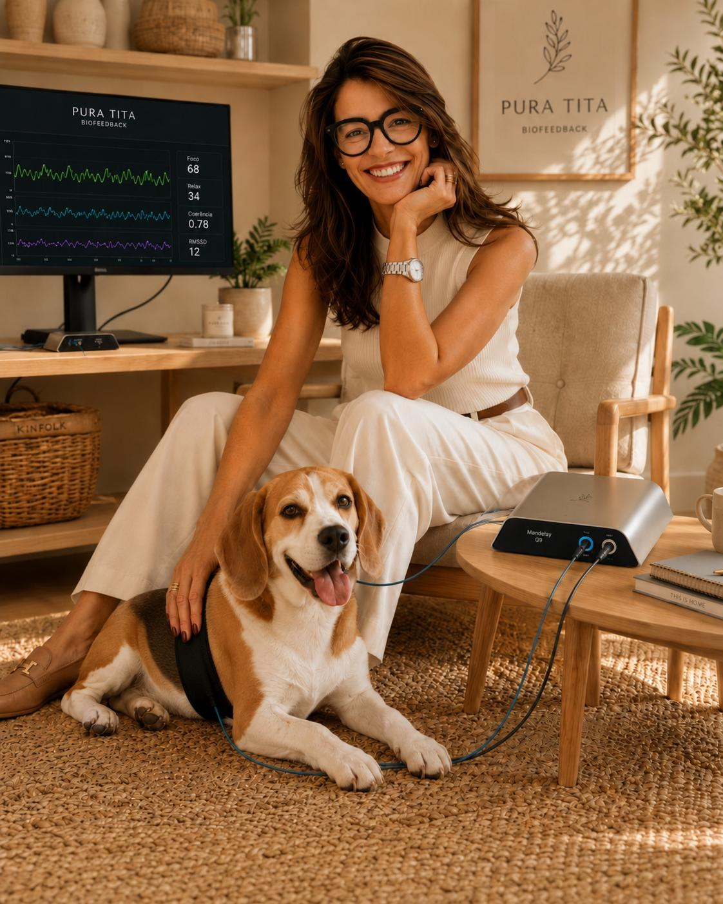
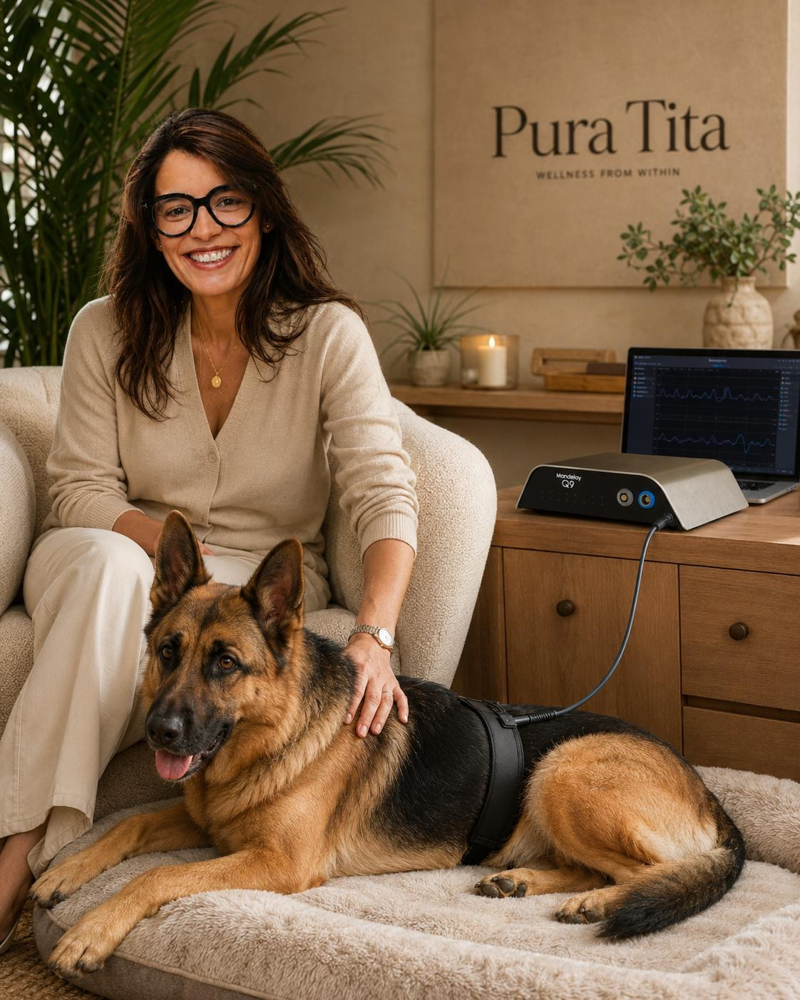
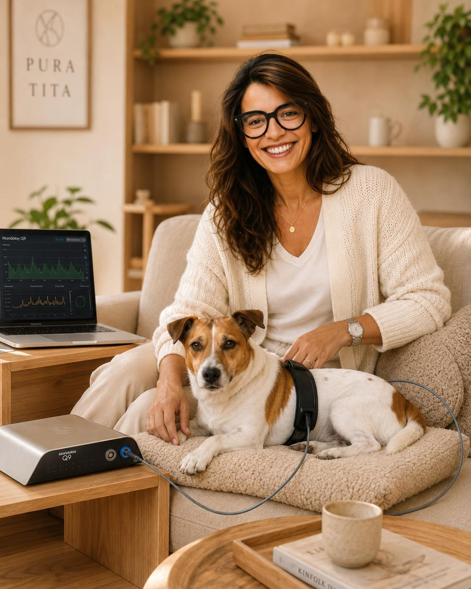

Tutora
Uma proposta visual que reforça o acompanhamento humano num ambiente acolhedor e sereno.
Família multiespécie
Esta secção reúne fotografias de tutores e animais em sessão de biofeedback, reforçando a visão da Pura Tita: tutores e animais podem viver o cuidado de forma complementar, acolhedora e com identidade.
Biofeedback em família
As imagens abaixo mostram diferentes momentos de acompanhamento com o equipamento Mandelay Q9, tanto em contexto humano como animal. Nos animais, a fita/arnês surge aplicada na barriga, como definido para esse contexto.
Uma proposta visual que reforça o acompanhamento humano num ambiente acolhedor e sereno.
Uma imagem clara e profissional para mostrar o biofeedback no contexto humano.

Um retrato luminoso e identitário da relação entre tutora e animal.

Uma imagem acolhedora para comunicar sessões com cães de companhia.

Uma proposta visual mais forte, ideal para mostrar amplitude e confiança.

Uma leitura mais próxima e intimista do biofeedback animal, integrada no universo Pura Tita.